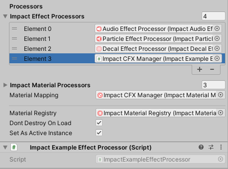

Custom Effects
This section provides some direction for creating custom Impact Effects. Creating custom Impact Effects is very open-ended, and there is no one required way that you should implement a custom effect.
This section will follow an example of an effect that logs a message based on the collision velocity.
For comprehensive documentation of the entire Impact CFX API, please refer to the API Reference.
Impact Effect Authoring Asset
The first step to create a custom effect is to create a script that inherits from ImpactEffectAuthoringBase. This will be the asset that you create in the editor to modify your effect. This class does not require you to implement anything, and All properties of the effect are entirely up to you.
//Asset for authoring the effect in the editor.
[CreateAssetMenu(fileName = "New Example Effect", menuName = "Impact CFX/Example Effect")]
public class ExampleEffectAuthoring : ImpactEffectAuthoringBase
{
//Can have any fields and properties that are needed for the effect.
public float ValueRoundingIncrement;
//Convenience method for creating an ExampleEffectData instance and copying properties.
public ExampleEffectData GetEffectData()
{
return new ExampleEffectData()
{
ValueRoundingIncrement = this.ValueRoundingIncrement
};
}
}
Effect Result
Now that we have our editor asset, we need to create data structures that will actually be used to process the effect in jobs. This example uses the IEffectResult and IEffectData interfaces to implement jobs-suitable effect data. This is the same pattern used by the built-in audio, particle, and decal effects.
First there is the effect result, which holds all of the result data needed for the effect to play. In our case, we just need a field for the message to display.
//The result of the effect. This is created when a collision is processed.
public struct ExampleEffectResult : IEffectResult
{
//Properties used internally by Impact CFX
public bool IsEffectValid { get; set; }
public int CollisionIndex { get; set; }
public int MaterialCompositionIndex { get; set; }
//Fields and properties for results specific to the effect.
public float ValueResult;
}
Effect Data
Next there is the effect data. This is essentially a copy of the effect asset, but as a struct and with data structures suitable for jobs, such as using FixedString128Bytes instead of string.
This data structure also defines the GetResult method, which is responsible for taking the collision data and returning an effect result.
//Holds data for the effect that is suitable for use in burst-compiled jobs.
public struct ExampleEffectData : IEffectData<ExampleEffectResult>
{
//Properties used internally by Impact CFX
public int EffectID { get; set; }
public ImpactTagMaskFilter IncludeTags { get; set; }
public ImpactTagMaskFilter ExcludeTags { get; set; }
//Fields and properties for parameters specific to the effect.
public float ValueRoundingIncrement;
//Takes the given collision data to produce a result.
public ExampleEffectResult GetResult(CollisionInputData collisionData, MaterialCompositionData materialCompositionData, ImpactVelocityData velocityData, ref Unity.Mathematics.Random random)
{
//Initialize result
ExampleEffectResult result = new ExampleEffectResult();
//Get the velocity magnitude and compare it to the velocity threshold to determine which message to display.
float velocityMagnitude = math.length(velocityData.ImpactVelocity);
//Round the value as defined by the rounding increment.
result.ValueResult = math.round(velocityMagnitude / ValueRoundingIncrement) * ValueRoundingIncrement;
//Can optionally add checks for validity. Invalid results will be discarded.
result.IsEffectValid = true;
return result;
}
}
Impact Effect Processor
In order for your effect to actually be shown, you will need to make a custom Impact Effect Processor.
Impact Effect Processors are responsible for handling everything related to a specific kind of effect. The Impact Audio Effect Processor, Impact Particle Effect Processor, and Impact Decal Effect Processor are the built-in Impact Effect Processors, responsible for handling Audio Effects, Particle Effects, and Decal Effects respectively.
There are a few ways you can implement an effect processor, detailed in the following sections.
Impact Simple Effect Processor
For relatively simple effects, your processor can inherit from ImpactSimpleEffectProcessor. This provides a basic common implementation that handles most of the effect processing for you, assuming that you use IEffectData and IEffectResult as shown in the previous section.
The following example is an effect processor for the previously defined example effect. It simply logs the result of the effect.
//Uses the ImpactSimpleEffectProcessor as a base for handling most of the implementation.
public class ExampleEffectProcessor : ImpactSimpleEffectProcessor<ExampleEffectAuthoring, ExampleEffectData, ExampleEffectResult>
{
//Return an instance using the convenience method from ExampleEffectAuthoring.
protected override ExampleEffectData getEffect(ExampleEffectAuthoring effectAuthoring)
{
return effectAuthoring.GetEffectData();
}
//Return a new ImpactEffectProcessorJob<ExampleEffectData, ExampleEffectResult> instance.
//This is only needed so that Burst knows to compile the generic job with these type arguments.
protected override ImpactEffectProcessorJob<ExampleEffectData, ExampleEffectResult> getEffectProcessorJobBase()
{
return new ImpactEffectProcessorJob<ExampleEffectData, ExampleEffectResult>();
}
//Process the effect result, in this case just logging the result value.
public override void PlayEffect(ExampleEffectResult effectResult, CollisionResultData collisionResultData)
{
Debug.Log($"The Value Result is: {effectResult.ValueResult}!");
}
}
Impact Pooled Effect Processor
The ImpactPooledEffectProcessor can be used in more complex cases, when your effect has object instances it needs to manage through object pooling. It also provides support for updating effect instances for sliding and rolling.
Before you can implement your processor, there are a few prerequisites.
Pooled Effect Object
First, you will need to make a custom script that inherits from PooledEffectObjectBase. This script is responsible for handling each instance of your effect.
The following example shows an object that keeps track of a value. It automatically decrements this value and returns itself to the pool once the value is less than 0.
//Implementation of PooledEffectObjectBase
public class ExampleEffectPooledObject : PooledEffectObjectBase
{
private float currentValue;
//Called when an effect is played for the first time.
public void PlayNewEffect(float value)
{
currentValue = value;
}
//Called when the effect is updated from sliding or rolling.
public void UpdateActiveEffect(float value)
{
currentValue = value;
}
//Run any needed code to update the object each FixedUpdate frame.
public override void UpdatePooledObject()
{
//Decrement the value.
currentValue -= Time.deltaTime;
//Return the object to its pool once value is less than 0.
if (currentValue < 0)
{
ReturnToPool();
}
}
}
Pooled Effect Authoring
Next, your effect authoring script will need to inherit from ImpactPooledEffectAuthoringBase, instead of ImpactEffectAuthoringBase.
This class requires you to implement a method to retrieve a template object:
//Asset for authoring the effect in the editor.
[CreateAssetMenu(fileName = "New Example Effect", menuName = "Impact CFX/Example Effect")]
public class ExampleEffectAuthoring : ImpactPooledEffectAuthoringBase
{
//Can have any fields and properties that are needed for the effect.
public ExampleEffectPooledObject Template;
public float ValueRoundingIncrement;
//Convenience method for creating an ExampleEffectData instance and copying properties.
public ExampleEffectData GetEffectData()
{
return new ExampleEffectData()
{
ValueRoundingIncrement = this.ValueRoundingIncrement
};
}
//Gets the object defined as a template for the object pool.
public override PooledEffectObjectBase GetTemplateObject()
{
return Template;
}
}
Pooled Effect Result
Your effect result will need to implement the IObjectPoolRequest interface. This allows the effect result to be used to request an object from the object pool. This adds quite a few new properties to the result, but almost all of them are used internally by Impact CFX.
//The result of the effect. This is created when a collision is processed.
public struct ExampleEffectResult : IEffectResult, IObjectPoolRequest
{
//Properties used internally by Impact CFX
public bool IsEffectValid { get; set; }
public int CollisionIndex { get; set; }
public int MaterialCompositionIndex { get; set; }
public bool IsObjectPoolRequestValid { get; set; }
public int TemplateID { get; set; }
public float Priority { get; set; }
public int ObjectIndex { get; set; }
public bool IsUpdate { get; set; }
//These contact point IDs allow Impact CFX to update effects for sliding and rolling.
public long ContactPointID { get; set; }
public bool CheckContactPointID { get; set; }
//Fields and properties for results specific to the effect.
public float ValueResult;
}
Pooled Effect Data
Your effect data will need to be updated to implement IPooledEffectData The important changes here are the setting of TemplateID, Priority, ContactPointID, CheckContactPointID, and IsObjectPoolRequestValid
//Holds data for the effect that is suitable for use in burst-compiled jobs.
public struct ExampleEffectData : IPooledEffectData<ExampleEffectResult>
{
//Properties used internally by Impact CFX
public int EffectID { get; set; }
public ImpactTagMaskFilter IncludeTags { get; set; }
public ImpactTagMaskFilter ExcludeTags { get; set; }
public int TemplateID { get; set; }
//Fields and properties for parameters specific to the effect.
public float ValueRoundingIncrement;
//Takes the given collision data to produce a result.
public ExampleEffectResult GetResult(CollisionInputData collisionData, MaterialCompositionData materialCompositionData, ImpactVelocityData velocityData, ref Unity.Mathematics.Random random)
{
//Initialize result
ExampleEffectResult result = new ExampleEffectResult();
//Get the velocity magnitude and compare it to the velocity threshold to determine which message to display.
float velocityMagnitude = math.length(velocityData.ImpactVelocity);
//Round the value as defined by the rounding increment.
result.ValueResult = math.round(velocityMagnitude / ValueRoundingIncrement) * ValueRoundingIncrement;
//Make sure to set the template ID of the result.
result.TemplateID = TemplateID;
//Priority is used for object pool stealing.
result.Priority = collisionData.Priority;
//Populate these if you plan on using your effect for sliding and rolling.
result.ContactPointID = ContactPointIDGenerator.CalculateContactPointID(collisionData.TriggerObjectID,
collisionData.HitObjectID,
collisionData.CollisionType,
materialCompositionData.MaterialData.MaterialTags.Value,
EffectID);
result.CheckContactPointID = collisionData.CollisionType.RequiresContactPointID();
//Can optionally add checks for validity. Invalid results will be discarded.
//Note how both IsEffectValid and IsObjectPoolRequestValid are being set.
result.IsEffectValid = result.IsObjectPoolRequestValid = true;
return result;
}
}
Object Pool
Then you will need to create a object pool class that inherits from EffectObjectPool. You don't need to implement anything in this class, it is just so Unity has a non-generic implementation of EffectObjectPool to work with.
//Don't need to implement anything here, this is just so Unity has a non-generic implementation to work with.
public class ExampleEffectPool : EffectObjectPool<ExampleEffectPooledObject> { }
Pooled Effect Processor
Finally, you can create a processor that inherits from ImpactPooledEffectProcessor. This is implemented similarly to ImpactSimpleEffectProcessor.
//Uses the ImpactPooledEffectProcessor as a base for handling most of the implementation.
public class ExampleEffectProcessor : ImpactPooledEffectProcessor<ExampleEffectAuthoring, ExampleEffectData, ExampleEffectResult, ExampleEffectPool, ExampleEffectPooledObject>
{
//Return an instance using the convenience method from ExampleEffectAuthoring.
protected override ExampleEffectData getEffectForPooledEffect(ExampleEffectAuthoring effectAuthoring)
{
return effectAuthoring.GetEffectData();
}
//Return a new ImpactEffectProcessorJob<ExampleEffectData, ExampleEffectResult> instance.
//This is only needed so that Burst knows to compile the generic job with these type arguments.
protected override ImpactEffectProcessorJob<ExampleEffectData, ExampleEffectResult> getEffectProcessorJobBase()
{
return new ImpactEffectProcessorJob<ExampleEffectData, ExampleEffectResult>();
}
//Similar to above, this is only needed so that Burst knows to compile the generic job with these type arguments.
protected override ObjectPoolJob<ExampleEffectResult> getObjectPoolJobBase()
{
return new ObjectPoolJob<ExampleEffectResult>();
}
//Process the effect result using the given pooled object instance
public override void PlayPooledEffect(ExampleEffectResult effectResult, ExampleEffectPooledObject pooledObject, CollisionResultData collisionResultData)
{
//IsUpdate tells us if the effect is a new effect or an update of an existing effect.
if (effectResult.IsUpdate)
pooledObject.UpdateActiveEffect(effectResult.ValueResult, collisionResultData.Point);
else
pooledObject.PlayNewEffect(effectResult.ValueResult, collisionResultData.Point);
}
}
Add to Impact CFX Manager
Once you have your custom Impact Effect Processor, all you need to do is add it as a component to an object and assign it to the Impact Effect Processors list on the Impact CFX Manager.
Example Effect Download
Use the link below to download a package with the example effect outlined in the above sections. You can use this for reference or as a starting point for your own effects.